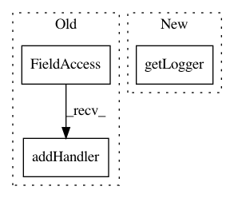

3910cd3e47c077b3a5fedac5b7e0355cf4f16713,ilastik-shell/ilastikshell/ilastikShell.py,,,#,21
Before Change
import sys
import logging
logger = logging.getLogger(__name__)
logger.addHandler(logging.StreamHandler(sys.stdout))
import ilastik_logging
import applet
After Change
import sys
import logging
logger = logging.getLogger(__name__)
traceLogger = logging.getLogger("TRACE." + __name__)
from lazyflow.tracer import Tracer
import ilastik_logging
In pattern: SUPERPATTERN
Frequency: 3
Non-data size: 3
Instances
Project Name: ilastik/ilastik
Commit Name: 3910cd3e47c077b3a5fedac5b7e0355cf4f16713
Time: 2012-07-06
Author: bergs@janelia.hhmi.org
File Name: ilastik-shell/ilastikshell/ilastikShell.py
Class Name:
Method Name:
Project Name: ilastik/ilastik
Commit Name: be81d75f31d318e087760bf9cb5b80a1540f3ddd
Time: 2012-06-25
Author: bergs@janelia.hhmi.org
File Name: ilastik-shell/applets/dataSelection/dataSelectionGui.py
Class Name:
Method Name:
Project Name: ilastik/ilastik
Commit Name: 956698e52dfb7883101e617a5b4905444be05925
Time: 2014-11-24
Author: bergs@janelia.hhmi.org
File Name: tests/testRoiRequestBatch.py
Class Name:
Method Name: